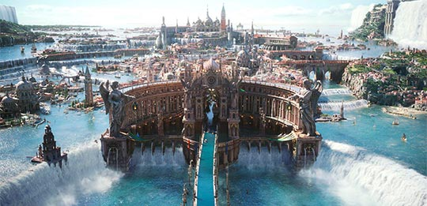

The story takes place in the land of Eos. At present, the world is divided between two warring states. Controlling a majority of the world’s lands is the militarily mighty Niflheim, an aggressively expanding imperial war machine.
The Kingdom of Lucis continues to resist the empire’s advance with magic. The Crown City of Insomnia stands proud as the kingdom’s last bastion, but the empire has already made inroads on the outlying territories, including the primary regions of Leide, Duscae, and Cleigne.
According to legend Eos was created by a race of beings that descended from a higher plane. The six Astrals formed a key part in this creation process: Titan the god of earth, Ramuh the storm god, Leviathan the sea goddess, Shiva the goddess of ice, Ifrit the god of fire, and Bahamut the god of light.
According to the ancient chronicles, Solheim ruled over the lands of Eos during an era of peace and prosperity when all six Astral gods looked over Eos together. It excelled in machine technology like airships and magitek armor.
Solheim worshiped the God of Fire, Ifrit, who had granted them the knowledge of fire and thus aided in their technological advancement. At its peak, the hubris of Solheim reached its peak, and their scorn of the gods turned them against their benefactor, Ifrit, and the rest of the Astrals.
The Oracle (Calmer of Gods) is a woman in the Final Fantasy XV Universe charged with maintaining the stability of Eos by cleansing the world and communing with its gods. Astrals are intelligent immortal creatures that have their own agendas, and speak a unique language only understood by those touched by them.